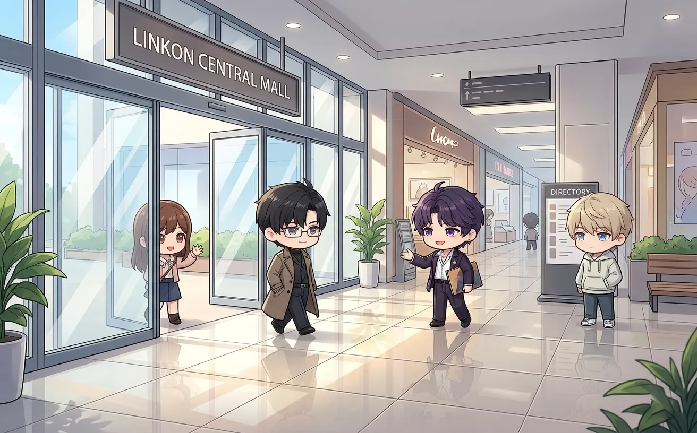
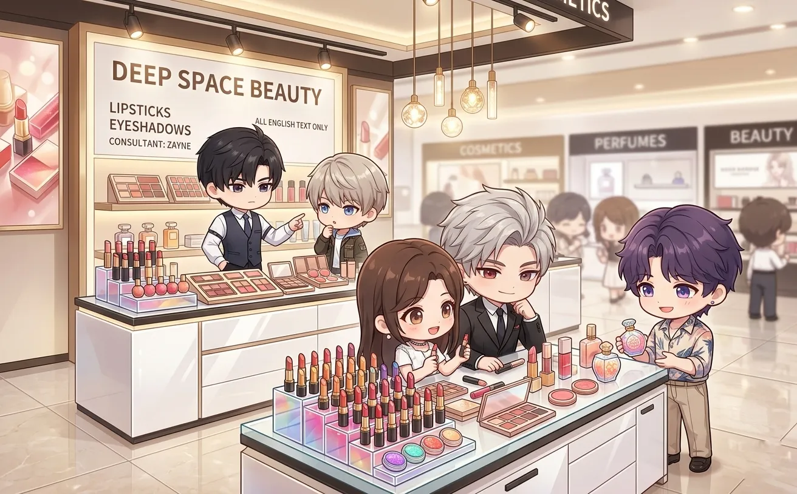
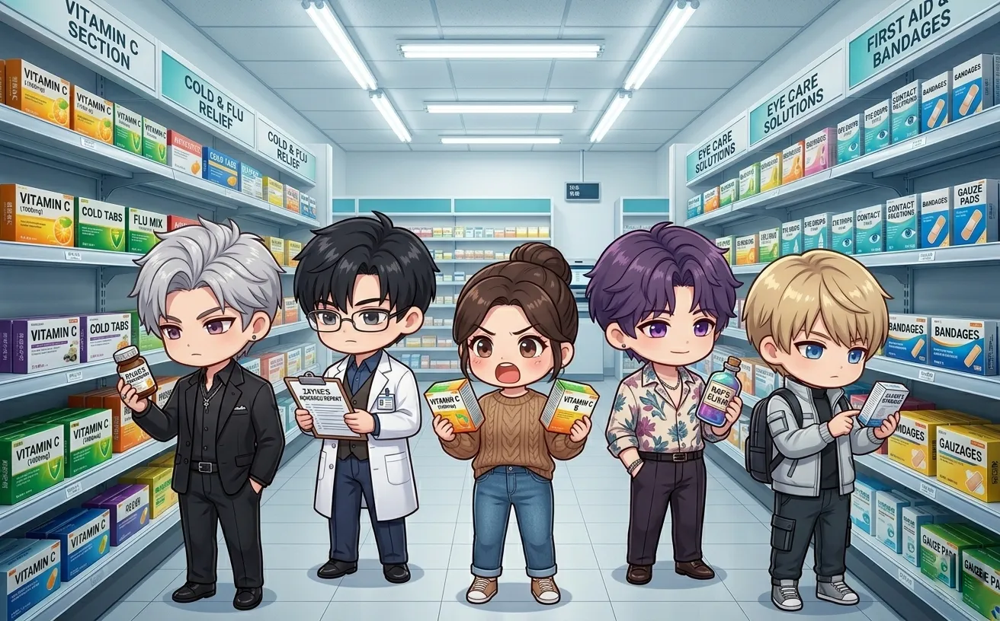
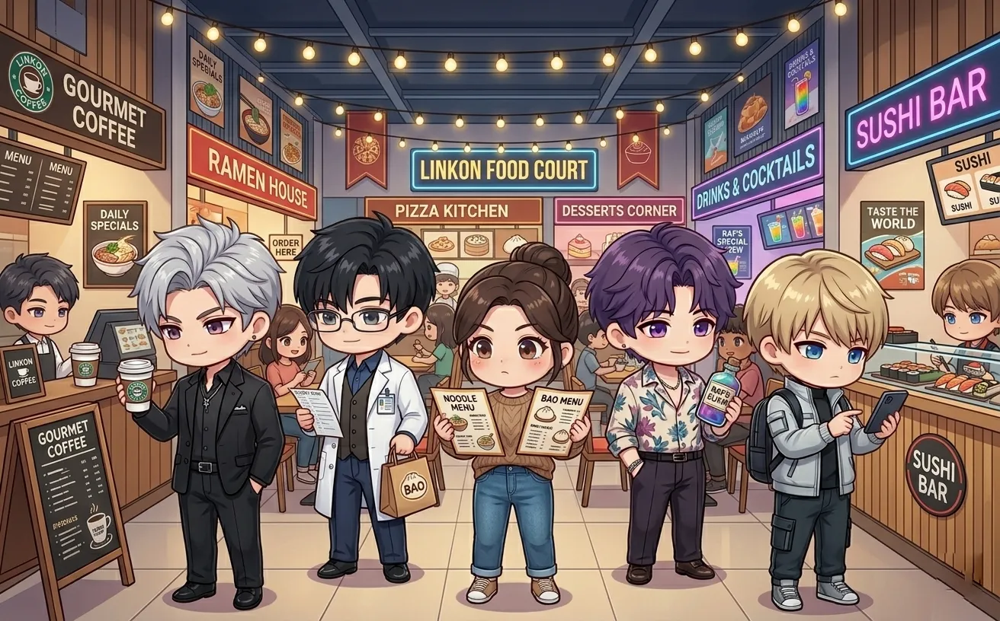

or: four men, one shopping center, zero survival instincts
it started, as most disasters do, with sylus.
"we should go to the mall," he said.
no one asked why. no one ever asks why.
this is what happened next.

sylus arrived first. black car. black coat. black sunglasses. indoors.
he stood by the entrance. arms crossed. watching. like he was evaluating the structural integrity of the building.
(he was.)
zayne arrived second. he looked like he'd rather be anywhere else. which was true.
"i'm here," he said. "unhappily."
"noted," said sylus.
zayne sighed. the sigh of a man who had already accepted his fate.
rafayel arrived third. wearing sunglasses. and a hat. and a scarf. (it was not cold.)
"i'm incognito," he announced.
"you look like a celebrity trying not to be recognized," said zayne.
"that's the point."
"you're failing."
xavier arrived fourth. twelve minutes late. he had fallen asleep in the car.
"sorry," he said. "the seat was comfortable."
"you weren't driving," said rafayel.
"i know. the passenger seat."
silence.
"let's go," said sylus.
and they went.

they passed a cosmetics counter. rafayel stopped. stared.
"i recognize that lipstick."
"of course you do," said zayne.
the sales associate approached. "sir, would you like to try our—"
"is that him?" whispered another associate. "the artist?"
"i think so."
"oh my god, it's him."
within thirty seconds, a crowd had formed.
rafayel signed a napkin. then a receipt. then someone's phone case.
sylus watched. amused.
zayne checked his watch.
xavier found a bench and sat down.
"help me," rafayel hissed.
"no," said sylus.
"this is your fault."
"i know."
ten minutes later, rafayel escaped. his sunglasses were missing. his hat was backwards. his dignity was in shambles.
"never again," he said.
"we haven't even gotten to the food court," said xavier.
rafayel stared at him. "you're worse than him."
xavier smiled. "i know."
xavier disappeared into a bookstore. they found him thirty minutes later in the astronomy section.
he was holding a book about constellations. he wasn't reading it. he was just... holding it.
"are you going to buy that?" asked rafayel.
"no."
"then why are you holding it?"
"it feels right."
rafayel looked at sylus. sylus shrugged.
zayne was in the medical section. reading a textbook. for fun.
"you work in a hospital," said rafayel.
"i know."
"you're off duty."
"i know."
"why are you reading about cardiology?"
zayne looked up. "the new techniques are fascinating."
rafayel walked away.
sylus was in the business section. looking at books about leadership. (he already knew everything in them.) (he bought three anyway.)
xavier never put down the constellation book. he didn't buy it either. he just... held it. for the entire trip.
"you could have just borrowed it from the library," said rafayel.
"it's not the same."
"how is it not the same?"
xavier didn't answer. he was already thinking about stars.

zayne found the pharmacy. he did not leave for forty minutes.
rafayel went to find him. "what are you doing?"
"comparing ingredients."
"they're painkillers."
"different brands have different formulations."
"they're the same."
zayne gave him a look. "they're not."
rafayel gave up.
sylus bought vitamins. expensive ones. he didn't need them. he bought them anyway.
"vitamins?" asked rafayel.
"for her."
rafayel's eyebrows rose. "you're buying her vitamins?"
"she doesn't take care of herself."
rafayel opened his mouth. closed it. opened it again.
"that's... actually sweet."
sylus's expression didn't change. "say that again and i'll leave you here."
rafayel said nothing.
but he smiled.

xavier had been waiting for this moment all day.
"ramen," he said.
"there are twelve restaurants," said rafayel.
"ramen."
"you could try something else."
xavier stared at him. "ramen."
they got ramen.
it was terrible.
"this is the worst ramen i've ever had," said rafayel.
xavier took another bite. "it's fine."
"it's not fine."
"it's food."
zayne pushed his bowl away. "the broth is too salty."
sylus hadn't touched his. he was watching the other customers. evaluating. (for threats.) (there were none.)
"why did you bring us here?" asked rafayel.
sylus was quiet for a moment. then: "she mentioned she wanted to come."
everyone stopped eating.
"she mentioned it once," sylus continued. "months ago. i thought..."
he didn't finish the sentence.
but they understood.
he'd brought them here to scout it. to make sure it was safe. to make sure it was good enough for her.
"the ramen is terrible," said xavier.
"i know," said sylus.
"we're not bringing her here."
"i know."
silence.
then rafayel laughed. "you're all idiots."
no one disagreed.
they left the mall at sunset. xavier fell asleep in the car again. (this time in the back seat.)
zayne stared out the window. thinking about patients. or maybe about her. (probably both.)
rafayel scrolled through photos. pictures of the mall. pictures of bad ramen. one picture of sylus buying vitamins. (he would never show it to anyone.) (he would keep it forever.)
sylus drove. silent. thinking about the next thing. (always the next thing.)
"today wasn't terrible," said rafayel.
"don't ruin it," said sylus.
rafayel smiled. "i'm just saying—"
"don't."
zayne sighed. "can we not do this in the car?"
"we're already doing it," said rafayel.
from the back seat, xavier mumbled: "ramen."
"go back to sleep," said rafayel.
xavier did.
the car was quiet. the city lights blurred past. and for a moment, none of them were thinking about missions or enemies or the weight of the world.
they were just... four guys who'd eaten bad ramen together.
it was nice.
none of them would admit it.